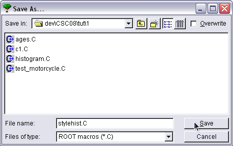
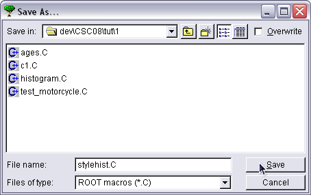
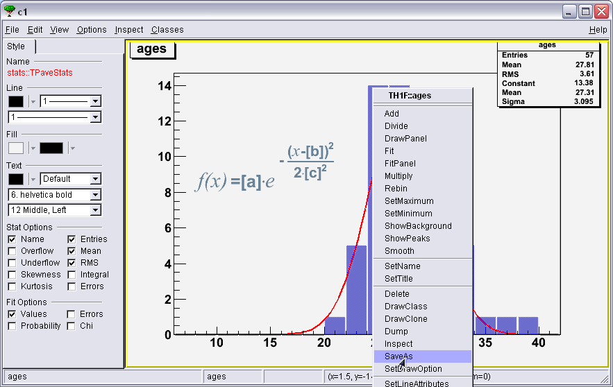
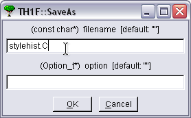

ROOT Exercise I
Drawing and Editing Histograms (2/3)
Save the histogram to styledhist.C (e.g. see the Canvas's file menu, or right-click the histogram) and look at that saved file. Restart ROOT and run styleshist.C to check that ROOT really does store the histogram as C++ code.
To save the source code from your modified histogram, you have three options:
- From the Canvas's file menu, select the entry Save As...

a File Dialog will popup, where you can select the type of file you want to save, and the file name. Select C files in the combo box and styleshist.C in the file name field.
 

- From the Canvas's file menu, select Save->c1.C and then rename the file
c1.C to styleshist.C

- Right-click the histogram, from the context menu, select Save As.

then type the file name and click on the "OK" button.

Use the first method previously described (File Menu, Save As)
Your code will most probably look like this:
{
//=========Macro generated from canvas: c1/c1
//========= (Fri Aug 29 15:23:52 2008) by ROOT version5.24/00
TCanvas *c1 = new TCanvas("c1", "c1",194,147,700,524);
c1->ToggleEventStatus();
c1->Range(1.5,-1.8375,46.5,16.5375);
c1->SetBorderSize(2);
c1->SetFrameFillColor(0);
TH1 *ages = new TH1F("ages","ages",25,0,50);
ages->SetBinContent(11,1);
ages->SetBinContent(12,5);
ages->SetBinContent(13,14);
ages->SetBinContent(14,14);
ages->SetBinContent(15,10);
ages->SetBinContent(16,5);
ages->SetBinContent(17,5);
ages->SetBinContent(18,1);
ages->SetBinContent(19,1);
ages->SetBinContent(20,1);
ages->SetBarOffset(0.05);
ages->SetBarWidth(0.899);
ages->SetEntries(57);
TF1 *gaus = new TF1("gaus","gaus",0,50);
gaus->SetFillColor(19);
gaus->SetFillStyle(0);
gaus->SetLineColor(2);
gaus->SetLineWidth(2);
gaus->SetChisquare(5.511464);
gaus->SetNDF(7);
gaus->SetParameter(0,13.38393);
gaus->SetParError(0,2.730819);
gaus->SetParLimits(0,0,0);
gaus->SetParameter(1,27.31178);
gaus->SetParError(1,0.5387154);
gaus->SetParLimits(1,0,0);
gaus->SetParameter(2,3.094605);
gaus->SetParError(2,0.4805778);
gaus->SetParLimits(2,0,36.10115);
ages->GetListOfFunctions()->Add(gaus);
TPaveStats *ptstats = new TPaveStats(0.7571839,0.7627119,
0.9798851,0.9957627,"brNDC");
ptstats->SetName("stats");
ptstats->SetBorderSize(2);
ptstats->SetFillColor(19);
ptstats->SetTextAlign(12);
TText *text = ptstats->AddText("ages");
text->SetTextSize(0.03062954);
text = ptstats->AddText("Entries = 57 ");
text = ptstats->AddText("Mean = 27.81");
text = ptstats->AddText("RMS = 3.61");
text = ptstats->AddText("Constant = 13.38 ");
text = ptstats->AddText("Mean = 27.31 ");
text = ptstats->AddText("Sigma = 3.095 ");
ptstats->SetOptStat(1111);
ptstats->SetOptFit(10001);
ptstats->Draw();
ages->GetListOfFunctions()->Add(ptstats);
ptstats->SetParent(ages->GetListOfFunctions());
ages->SetFillColor(4);
ages->SetFillStyle(3001);
ages->SetLineColor(4);
ages->GetXaxis()->SetRange(4,21);
ages->Draw("BAR");
tex = new TLatex(0.15,0.55,"#font[12]{f(x)}#scale[0.8]{=[a]}"
"#upoint#font[12]{e}^{ - #frac{(#scale[1.2]{#font[12]{x}}-[b])^{2}}"
"{2#upoint[c]^{2}}}");
tex->SetNDC();
tex->SetTextColor(36);
tex->SetTextSize(0.07);
tex->SetLineWidth(2);
tex->Draw();
TPaveText *pt = new TPaveText(0.01,0.945,0.1018391,0.995,"blNDC");
pt->SetName("title");
pt->SetBorderSize(2);
pt->SetFillColor(19);
text = pt->AddText("ages");
pt->Draw();
c1->Modified();
c1->cd();
c1->SetSelected(c1);
}
 Help
Help